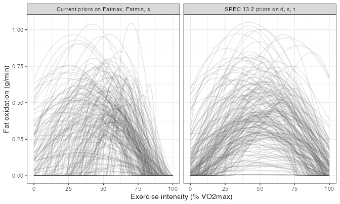
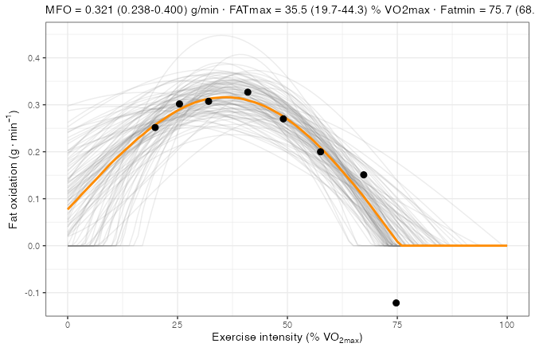
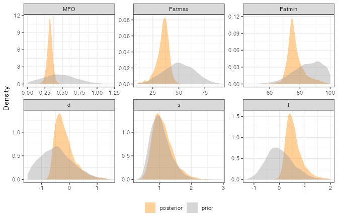
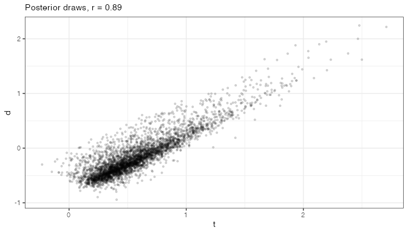

MFO_bayes() fits the SIN model of Chenevière et
al. (2009) to the steps of an MFO test as a Bayesian model (brms on
Stan) and returns posterior medians and credible intervals for MFO,
Fatmax, Fatmin, the Fatmax zone and the SIN parameters (SPEC 13.2). It
does not replace MFO(); it is a separate analysis of the
steps that MFO() returns. brms and rstan are suggested
packages, and each model takes about a minute to compile, so the results
in this article were computed once with
inst/validation/bayes_vignette.R and are shown here as
figures and printed output.
The model and its parametrisation
Fat oxidation of step i is Normal(M sin(uis), sigma), with u = pi1/s / (pi + 2d) (K x + d + t), K = pi / 100, x in %VO₂max, and M the MFO in g/min, so there is no normalisation by the highest step. Outside the two zeros of the curve us is clamped to 0 or pi, so fat oxidation is 0 there.
The model is parametrised by MFO, Fatmax, Fatmin and s, the quantities the data inform, and d and t are computed in each draw from the closed forms of Fatmax and Fatmin (SPEC 6.5), with a = 2-1/s:
- t = pi + d - K Fatmin
- d = [pi (1 - a) + K (Fatmax - Fatmin)] / [2 (a - 1)]
Default priors, the authors’ weakly informative choices:
- MFO ~ Normal(0.45, 0.25) truncated at 0, centred above the normative mean of sedentary adults (0.34 ± 0.10 g/min; Amaro-Gahete et al. 2018) with an inflated SD to cover trained people;
- Fatmax ~ Normal(50, 15) truncated to (10, 90) %VO₂max, between the
normative value of sedentary adults (44.2 ± 12.4; Amaro-Gahete et al.
- and that of trained men (64 %; Achten et al. 2002);
- Fatmin ~ Normal(90, 14) truncated to (Fatmax, 100) %VO₂max (90.1 ± 14.1 in Chenevière et al. 2009);
- s ~ LogNormal(0, 0.3); sigma ~ Exponential(10).
Why not priors on d, s and t
The first version of SPEC 13.2 put the priors on the SIN parameters: d ~ Normal(0, 0.3), s ~ LogNormal(0, 0.3), t ~ Normal(0, 0.2). These priors are centred on the basic SIN curve (d = 0, s = 1, t = 0: symmetric, with its maximum at 50 %VO₂max). A trained-like curve with Fatmax at 30-45 %VO₂max needs t between 0.63 and 1.10, 3 to 5.5 SD above the prior mean. Because s and t are strongly correlated in the posterior, the data fix the shape of the curve but not where the parameters sit along that ridge, and the prior decides it. In the simulation study below, in the population where t is far from 0, the 95 % intervals of s with those priors contained the true s in only 7-10 % of tests, and those of Fatmin in 78-79 %.
Prior predictive check
MFO_prior_check() samples the priors only
(sample_prior = "only" in brms) and draws the curves they
imply.
library(MFO)
data(list = c("basal_df", "MFO_df", "VO2max_df"))
r <- MFO(step_time = 20, db_MFO = MFO_df, db_basal = basal_df,
db_graded = VO2max_df, cv_var = "RER", author = "Frayn",
energy_equivalents = "classic", age = 30, negative_FAT = "keep")
pc <- MFO_prior_check(r$MFO_db, ndraws = 200, seed = 2)
plot(pc)
Both priors allow Fatmax over a similar range (5th-95th percentile 26.5-69.5 %VO₂max with the SPEC priors, 24.7-70.9 with the current ones). They differ in Fatmin: the SPEC priors put its median at 100.6 %VO₂max (79.1-122.9), so most of their curves reach zero beyond the maximal test; the current priors keep it below 100 (median 85.3, 69.4-97.4), as observed.
Fitting the example data
<MFO_bayes> SIN model, sigma constant, 95 % credible intervals
quantity median lower upper contraction note
MFO 0.321 0.238 0.400 0.9690
Fatmax 35.500 19.700 44.300 0.8340
Fatmin 75.700 68.600 92.100 0.6700
zone_lower 24.000 1.500 33.800 NA
zone_upper 47.200 36.900 55.100 NA
d -0.236 -0.629 0.856 0.5980
s 1.060 0.637 1.880 0.0151 prior-dominated
t 0.508 0.119 1.470 0.6170
max R-hat 1.006, min bulk ESS 951, min tail ESS 926, 0 divergent transition(s)
largest posterior |r| among d, s and t: 0.89
The shape parameters (d, s, t) are poorly identified among themselves; interpret MFO, Fatmax and Fatmin.
contraction = 1 - Var(posterior) / Var(prior) is how
much the data narrowed each quantity. MFO (0.97), Fatmax (0.83) and
Fatmin (0.67) are informed by the data; s is not (0.015, labelled
prior-dominated).
Prior and posterior

The posteriors of MFO, Fatmax and Fatmin are much narrower than their priors. The posterior of s is its prior: the 8 steps say nothing about the symmetry of the curve.
The ridge

The shape parameters are poorly identified among themselves: in this
fit d and t are correlated 0.89, and in simulated tests the largest
correlation among d, s and t was usually above 0.9. Many combinations of
d, s and t draw almost the same curve, and the prior decides where along
that ridge the posterior sits. This is a property of the SIN model, not
of the priors, so print() always gives the largest
correlation with a fixed note: interpret MFO, Fatmax and Fatmin,
not d, s and t.
Constant or proportional error
The errors of fat oxidation grow with intensity (fat oxidation is
about 1.67 (VO₂ - VCO₂), which amplifies the error of VCO₂).
sigma = "proportional" lets sigma grow linearly with
%VO₂max. Leave-one-out cross-validation (brms::loo()) on
the example data:
| sigma | elpd_loo | SE | elpd difference (SE) |
|---|---|---|---|
| proportional | 10.6 | 4.5 | 0 |
| constant | 7.4 | 3.9 | -3.2 (1.0) |
This comparison is an illustration of how to choose between them, not
a conclusion: it is one participant with 8 steps, and one or two
observations had a Pareto k above 0.7, so loo() is
approximate here. The default stays "constant"; compare
both with loo() on your own data.
Validation
Reduced study (Jorge, 2026-11-18): 100 simulated tests per cell, 8 steps, noise on fat oxidation of 5 or 10 % of MFO (SD), MFO 0.4 g/min, in two populations: “sedentary” (Fatmax 45 ± 8 %VO₂max, with the shape d = 0.18, s = 1.52, so Fatmin about 86) and “trained”, defined by its Fatmax and Fatmin: Fatmax 64 ± 8 %VO₂max (Achten et al. 2002) and Fatmin 25 points above it, about 89 (s = 1.52, d set to give that width). Three options: the priors first proposed in SPEC 13.2 on d, s, t; t replaced by Fatmax (prior N(44.2, 12.4)); and the current Fatmax + Fatmin. Coverage of the 95 % credible intervals; median contraction of d and largest posterior |r| among d, s, t; tests with divergent transitions or R-hat above 1.01 (adapt_delta = 0.99).
| Population | Noise | Option | MFO | Fatmax | Fatmin | d | s | Contraction d | max |r| | Divergences | R-hat > 1.01 |
|---|---|---|---|---|---|---|---|---|---|---|---|
| sedentary | 5 % | SPEC d, s, t | 0.96 | 0.85 | 0.79 | 0.56 | 0.07 | 0.81 | 0.92 | 0 | 0 |
| sedentary | 5 % | t by Fatmax | 0.97 | 0.89 | 0.94 | 0.97 | 0.92 | 0.67 | 0.96 | 2 | 1 |
| sedentary | 5 % | Fatmax + Fatmin | 0.96 | 0.88 | 0.93 | 0.97 | 0.97 | 0.85 | 0.96 | 0 | 0 |
| sedentary | 10 % | SPEC d, s, t | 0.99 | 0.94 | 0.78 | 0.81 | 0.10 | 0.64 | 0.81 | 2 | 0 |
| sedentary | 10 % | t by Fatmax | 0.99 | 0.96 | 0.93 | 1.00 | 0.89 | 0.52 | 0.90 | 7 | 1 |
| sedentary | 10 % | Fatmax + Fatmin | 0.99 | 0.94 | 0.91 | 0.98 | 0.99 | 0.74 | 0.92 | 3 | 0 |
| trained | 5 % | SPEC d, s, t | 0.95 | 0.96 | 0.98 | 0.92 | 0.99 | 0.88 | 0.92 | 0 | 7 |
| trained | 5 % | t by Fatmax | 0.93 | 0.96 | 0.88 | 0.92 | 0.90 | 0.74 | 0.90 | 1 | 8 |
| trained | 5 % | Fatmax + Fatmin | 0.93 | 0.97 | 0.98 | 0.99 | 0.94 | 0.99 | 0.94 | 0 | 5 |
| trained | 10 % | SPEC d, s, t | 1.00 | 0.98 | 0.91 | 0.93 | 0.96 | 0.61 | 0.82 | 0 | 4 |
| trained | 10 % | t by Fatmax | 0.99 | 0.98 | 0.86 | 0.90 | 0.90 | 0.49 | 0.84 | 12 | 2 |
| trained | 10 % | Fatmax + Fatmin | 0.99 | 0.88 | 0.92 | 0.95 | 0.91 | 0.96 | 0.87 | 1 | 1 |
The SPEC priors fail where t is far from 0 (the sedentary population
with a trained-like shape): the intervals of s covered the true s in
7-10 % of tests. Fatmax + Fatmin keeps d, s and Fatmin at 0.91-0.99 in
both populations. Fatmax is short of 95 % in some cells (0.88), and its
misses have a direction: in the sedentary population every miss, in all
three options, was an underestimate (median error of the posterior
median -1.1 to -1.8 %VO₂max), and so were the 12 misses of Fatmax +
Fatmin in the trained population at 10 % noise. The prior of s, centred
on a symmetric curve (s = 1) while the simulated curves have s = 1.52,
explains part of it: with s ~ LogNormal(0, 0.5) or (0, 0.6) the median
error fell from -1.15 to -0.74 and -0.45 %VO₂max (sedentary, 5 %) and
from -1.58 to -0.87 and -0.72 (trained, 10 %), and coverage rose to
0.93-0.94 and 0.91, but the misses were still nearly all underestimates
and divergences increased. With s ~ LogNormal(0, 0.5) and 4000
iterations, 9 % (sedentary) and 14 % (trained) of the fits still had
divergent transitions, so the default prior stays LogNormal(0, 0.3)
(inst/validation/bayes_s_prior.R).
Limitation. With the default priors, Fatmax is
slightly underestimated: by a median of 1.1-1.6 %VO₂max in these
simulations. For scale, the typical error of Fatmax with the classical
fits of the same kind of tests (8 steps) was 1.6 (5 % noise) and 2.6
%VO₂max (10 %) for the absolute SIN of MFO_kinetics()
(median absolute error) and 2.5-3.1 and 4.1-5.0 %VO₂max for P3 (RMSE;
vignette("validation")): the bias is smaller than the error
of a single test, but it is systematic. In the trained population 1-8 of
100 tests had an R-hat above 1.01 with every option; with
iter = 4000 none did, so use iter = 4000 when
Fatmax is high.
Reproducing
Rscript -e "devtools::load_all(); source('inst/validation/bayes_vignette.R')"
Rscript -e "devtools::load_all(); source('inst/validation/bayes_study.R')"References
Achten J, Gleeson M, Jeukendrup AE (2002). Med Sci Sports Exerc 34: 92-97. doi:10.1097/00005768-200201000-00015
Amaro-Gahete FJ, Sanchez-Delgado G, Ruiz JR (2018). Front Physiol 9: 1460. doi:10.3389/fphys.2018.01460
Bürkner PC (2017). brms: an R package for Bayesian multilevel models using Stan. J Stat Softw 80(1): 1-28. doi:10.18637/jss.v080.i01
Carpenter B, et al. (2017). Stan: a probabilistic programming language. J Stat Softw 76(1): 1-32. doi:10.18637/jss.v076.i01
Chenevière X, Malatesta D, Peters EM, Borrani F (2009). Med Sci Sports Exerc 41: 1615-1625. doi:10.1249/MSS.0b013e31819e2f91